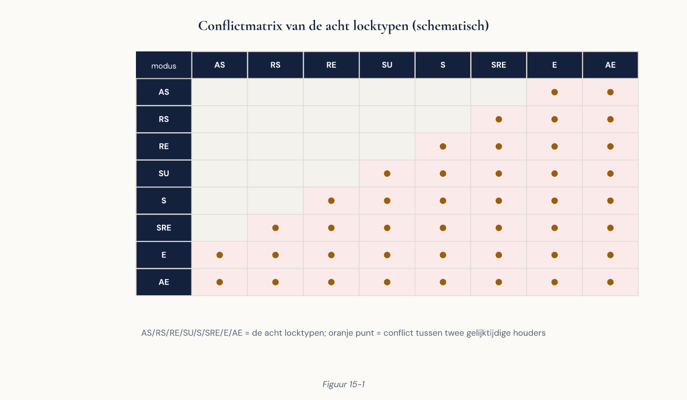

Cursus Databasemanagement · Niveau 2 (EDB Professional) · Deel 15 van 30
Concurrency en locking.
Vier delen lang heeft u query's sneller gemaakt. Dinsdagavond gaat het portaal alsnog onderuit. De query's zijn niet trager geworden — ze wachten. Dat is diagnostisch lastig, want alle gebruikelijke signalen blijven normaal: lage CPU, rustige schijf, geen uitschieters in pg_stat_statements. En toch reageert niets. Dit tweedelige deel behandelt locks, de lockwachtrij, isolatieniveaus en wat er gebeurt zodra honderdvijftig sessies tegelijk hetzelfde willen.
9secties
±4,5uleestijd + werkboek, 2 dagdelen
7controlevragen
8tabellocktypen
Positionering. Deze cursus is een voorbereiding op de EDB PostgreSQL Professional-certificering van EnterpriseDB en uitdrukkelijk geen vervanging van het officiële examenmateriaal — raadpleeg altijd de actuele blauwdruk via enterprisedb.com. Alle formuleringen, figuren en werkvormen in dit materiaal zijn van Ductus; studeer voor het examen altijd óók de bron.
Niveau 2: 11 Installatie, configuratie en tablespaces → 12 Fysiek ontwerp: pagina's, TOAST en bloat → 13 Query-optimalisatie: EXPLAIN ANALYZE en de planner → 14 Geavanceerde indexering → 15 Concurrency en locking (hier) → 16 Partitionering → 17 Back-up en herstel → 18 Replicatie → 19 Hoge beschikbaarheid → 20 Monitoring, logging en pgaudit → 21 Security-verdieping en NoSQL in perspectief → 22 Zero-downtime migraties en capstone
01
Waar dit deel over gaat
⏱ 8 min
Dit deel beslaat twee dagdelen. Dagdeel A (secties 2 tot en met 6) gaat over locks: wie wacht op wie, en waarom. Dagdeel B (secties 7 tot en met 9) gaat over isolatie en gelijktijdige werklast: correct blijven onder druk.
Na dagdeel A kunt u: de belangrijkste locktypen benoemen; uitleggen hoe de lockwachtrij werkt en waarom één wachtende opdracht alles erachter blokkeert; vaststellen wie wie blokkeert met pg_locks en pg_blocking_pids; lock_timeout gericht inzetten; deadlocks diagnosticeren en voorkomen; en een migratie zo uitvoeren dat hij productie niet plat legt.
Na dagdeel B kunt u: isolatieniveaus toepassen op een productiewerklast; uitleggen hoe Serializable Snapshot Isolation werkt; retry-logica ontwerpen; een wachtrijpatroon bouwen dat schaalt; hotspots herkennen en oplossen; en gelijktijdigheid monitoren.
02
Snelheid is niet het probleem
⏱ 10 min
Vier delen lang heeft u query's sneller gemaakt. Dinsdagavond gaat het portaal alsnog onderuit. De query's zijn niet trager geworden. Ze wachten. Dat is een ander soort probleem, en het is diagnostisch lastiger, omdat alle gebruikelijke signalen normaal blijven: de CPU staat laag, de schijf is rustig, pg_stat_statements toont geen uitschieters. En toch reageert niets.
Verschijnsel
CPU
I/O
pg_stat_activity
Trage query
Hoog
Hoog
state = active
Vergrendeling
Laag
Laag
wait_event_type = 'Lock'
Uit deel 13: "alles is traag, ook inloggen" is vrijwel nooit een index. Dat is dit.
03
Het lockmodel en de lockwachtrij
⏱ 20 min
PostgreSQL kent locks op verschillende niveaus. Acht tabellocks, van licht naar zwaar — ACCESS SHARE (door SELECT), ROW SHARE, ROW EXCLUSIVE (INSERT/UPDATE/DELETE), SHARE UPDATE EXCLUSIVE (VACUUM, ANALYZE, CREATE INDEX CONCURRENTLY), SHARE, SHARE ROW EXCLUSIVE, EXCLUSIVE, en ACCESS EXCLUSIVE (ALTER TABLE, DROP, TRUNCATE, VACUUM FULL, REINDEX).

Figuur 15-1 — conflictmatrix van de acht locktypen
Twee regels uit uw hoofd: ACCESS SHARE en ACCESS EXCLUSIVE zijn elkaars tegenpolen — een gewone SELECT conflicteert met precies één ding, een ALTER TABLE of DROP. En SHARE UPDATE EXCLUSIVE conflicteert met zichzelf — twee VACUUM-runs op dezelfde tabel wachten op elkaar, en een CREATE INDEX CONCURRENTLY wacht op een lopende VACUUM. Locks worden bovendien altijd vastgehouden tot het eind van de transactie — er is geen manier ze tussentijds vrij te geven, wat verklaart waarom transactieduur en vergrendeling hetzelfde onderwerp zijn.
De lockwachtrij: het belangrijkste onderwerp van dit deel
Wachtende locks vormen een rij, en die rij is ordelijk. Wie op een lock wacht, laat niemand voorbij die een conflicterende lock nodig heeft — ook niet als die persoon zelf niet met de blokkerende sessie in conflict zou zijn.
09:00:00 Sessie A: SELECT ... FROM deelnemer; (rapportage, duurt 20 minuten)
→ ACCESS SHARE, blijft vasthouden
09:00:05 Sessie B: ALTER TABLE deelnemer ADD COLUMN ...;
→ wil ACCESS EXCLUSIVE → conflicteert met A → wachtrij
09:00:06 Sessie C: SELECT * FROM deelnemer WHERE deelnemer_id = 42;
→ wil ACCESS SHARE → conflicteert NIET met A
→ maar staat achter B in de rij → WACHT
Sessie C is een portaalquery van 0,3 milliseconden. Hij wacht twintig minuten — en elke volgende query op deelnemer doet hetzelfde. Binnen een minuut staan er honderden sessies te wachten, loopt de verbindingspool vol, en is het portaal onbereikbaar. De ALTER TABLE zelf heeft nog geen enkele rij aangeraakt; hij wacht ook, maar zijn plek in de rij legt de hele tabel stil.
De les
Niet de duur van de opdracht bepaalt de schade, maar de duur van het wachten. Een ALTER TABLE die volgens de log twee milliseconden duurde, kan een portaal twintig minuten platleggen — omdat hij twintig minuten in de wachtrij stond en ondertussen alles ophield.
Controlevraag
Uit Werkboek deel 15, Opdracht 15.2 — de lockwachtrij
1Sessie 1 houdt een rapportagequery open (ACCESS SHARE). Sessie 2 wil ALTER TABLE ADD COLUMN (ACCESS EXCLUSIVE) en gaat wachten. Sessie 3 wil daarna alleen SELECT ... WHERE deelnemer_id = 42 (ACCESS SHARE). Wacht sessie 3, en waarom is dat verrassend?Toon antwoord
Ja, sessie 3 wacht ook — en dat is het verrassende, want ACCESS SHARE conflicteert niet met de ACCESS SHARE van sessie 1. Maar sessie 3 staat achter sessie 2 in de wachtrij, en de wachtrij is ordelijk: niemand gaat voorbij een wachtende conflicterende lock, ook niet als de eigen lock daar geen conflict mee heeft. Dat is de kern van de lockwachtrij: het gevaar zit niet in het conflict zelf, maar in de positie in de rij.
04
Rijlocks en diagnose: wie blokkeert wie
⏱ 18 min
Naast tabellocks bestaan er locks op rijniveau, uit deel 7 met de varianten erbij: FOR UPDATE, FOR NO KEY UPDATE, FOR SHARE, en FOR KEY SHARE. Dat laatste bestaat voor foreign key-controles: wanneer u een rij invoegt in dienstverband, controleert PostgreSQL of de bijbehorende deelnemer bestaat, en neemt daarvoor een lichte lock op die rij. Zonder FOR KEY SHARE zou elke invoeging in een kindtabel de ouderrij blokkeren voor updates — onwerkbaar op een tabel als deelnemer. Rijlocks staan niet in pg_locks zolang er geen conflict is; ze worden opgeslagen in de rij zelf (xmax, deel 12), en pas bij een conflict verschijnt er een wachtrecord.
Diagnose: wie blokkeert wie
SELECT a.pid, a.usename, a.state,
now() - a.xact_start AS transactieduur,
a.wait_event_type, a.wait_event,
pg_blocking_pids(a.pid) AS wordt_geblokkeerd_door,
left(a.query, 100) AS query
FROM pg_stat_activity a
WHERE a.backend_type = 'client backend'
ORDER BY a.xact_start;
pg_blocking_pids() is het gereedschap dat u zoekt: het geeft de proces-id's terug die deze sessie tegenhouden. De hoofdschuldige vinden: zoek de sessie waarvoor pg_blocking_pids() leeg is en die zelf anderen blokkeert — dat is de wortel van de boom.
Ingrijpen: probeer altijd eerst pg_cancel_backend(pid), dat annuleert de lopende query zonder de sessie te sluiten. Bij een sessie in idle in transaction helpt dat niet — er draait geen query om te annuleren — en dan is pg_terminate_backend(pid) de enige optie. Wat u in de log wilt hebben: log_lock_waits = on met deadlock_timeout = 1s (deel 11), zodat elke sessie die langer dan die drempel wacht, gelogd wordt mét de blokkerende query — zonder deze instelling is een incident achteraf vrijwel niet te reconstrueren.
Controlevraag
Uit Werkboek deel 15, Opdracht 15.3 — diagnose
1U vindt de blokkerende sessie en annuleert haar met pg_cancel_backend. De sessie blijkt daarna nog steeds te blokkeren, nu in de toestand idle in transaction. Wat is er gebeurd, en wat doet u vervolgens?Toon antwoord
pg_cancel_backend annuleert alleen de lopende query, niet de transactie zelf — de locks van die transactie blijven vastgehouden totdat de transactie zelf eindigt. De sessie ging van "actief met een query" naar "idle in transaction", en blokkeert nog steeds. Bij idle in transaction is er geen query meer om te annuleren, dus is pg_terminate_backend de enige optie — die beëindigt de hele sessie inclusief de transactie en geeft de locks vrij.
05
Timeouts en deadlocks op schaal
⏱ 18 min
Vier timeouts, met elk een ander doel: statement_timeout beëindigt een query die te lang draait; lock_timeout beëindigt een query die te lang wacht op een lock; idle_in_transaction_session_timeout beëindigt een sessie met een openstaande transactie die niets doet; transaction_timeout is een harde bovengrens op de totale duur.
lock_timeout is de belangrijkste van dit deel
Hij lost het scenario uit sectie 3 op: SET lock_timeout = '3s'; ALTER TABLE deelnemer ADD COLUMN e_mailadres text; — krijgt de ALTER TABLE de lock niet binnen drie seconden, dan faalt hij met een foutmelding en gaat hij níét in de wachtrij staan waar hij alles achter zich ophoudt. Vuistregel: elke DDL op productie draait met lock_timeout, zonder uitzondering.
Deadlocks op schaal
Uit deel 7: twee transacties die op elkaar wachten. PostgreSQL detecteert dit na deadlock_timeout en breekt er één af. Op productieschaal komen er drie dingen bij: deadlocks tussen meer dan twee sessies (de detectie werkt ook bij een cyclus van vier of vijf); deadlocks via foreign keys, waarbij twee sessies die verschillende kindrijen invoegen elkaar via FOR KEY SHARE-locks blokkeren, contra-intuïtief omdat geen van beide de ouderrij wijzigt; en deadlocks via indexen bij INSERT met dezelfde unieke sleutel.
De maatregelen, in volgorde van effectiviteit: een vaste benaderingsvolgorde — binnen een transactie rijen altijd in oplopende volgorde van hun primaire sleutel benaderen, verreweg de belangrijkste en een teamafspraak, geen instelling; korte transacties; batchbewerkingen sorteren; en retry-logica voor wat bij gelijktijdige belasting nooit volledig is uit te sluiten (sectie 8).
Controlevraag
Uit Werkboek deel 15, Opdracht 15.5 — deadlocks op schaal
1Twee sessies voegen elk een kindrij in dienstverband in die naar een andere deelnemer verwijst, in tegengestelde volgorde, en raken verstrikt in een deadlock via FOR KEY SHARE-locks. Waarom is dit contra-intuïtief, en welke teamafspraak voorkomt het?Toon antwoord
Contra-intuïtief omdat geen van beide sessies de ouderrij (de deelnemer) wijzigt — ze voegen alleen kindrijen in. De lock ontstaat door de referentiële-integriteitscontrole zelf, die de deelnemer moet vasthouden zodat hij niet tussentijds verdwijnt. Ontwikkelaars zoeken de oorzaak daarom vaak in de kindtabel en vinden hem niet. De teamafspraak die het voorkomt: rijen binnen een transactie altijd in oplopende volgorde van hun primaire sleutel benaderen — benaderen beide sessies in dezelfde volgorde, dan kan er geen cyclus ontstaan, hooguit wachttijd.
06
Advisory locks en het veilige migratiepatroon
⏱ 18 min
Soms wilt u coördineren over iets dat geen rij is: "slechts één proces mag de nachtelijke batch draaien". Daarvoor bestaan advisory locks — op een zelfgekozen getal, buiten de gegevens om. Sessieniveau (pg_advisory_lock) blijft tot u hem vrijgeeft of de sessie sluit; transactieniveau (pg_advisory_xact_lock) valt vanzelf vrij bij commit of rollback. Waarschuwing: een sessieniveau-lock valt niet vanzelf vrij bij een ROLLBACK, en in combinatie met connection pooling is dat gevaarlijk — de verbinding gaat terug naar de pool met de lock er nog op. Gebruik in gepoolde omgevingen daarom de _xact_-variant.
DDL en locks
Elke DDL-opdracht neemt een specifieke lock voor een specifieke duur: CREATE INDEX (zonder CONCURRENTLY) neemt SHARE voor de hele bouwtijd — schrijvers wachten; CREATE INDEX CONCURRENTLY neemt SHARE UPDATE EXCLUSIVE, lang maar niet blokkerend; ALTER TABLE ADD COLUMN (zonder volatile default) neemt ACCESS EXCLUSIVE zeer kort; ALTER TABLE ALTER TYPE neemt ACCESS EXCLUSIVE voor de hele herschrijving. Het patroon: een korte ACCESS EXCLUSIVE-lock is meestal acceptabel — als u hem krijgt. Een lange is dat nooit. En ook een korte lock is gevaarlijk als u erop moet wachten (sectie 3).
Het veilige migratiepatroon
Vooraf: controleer of er lange transacties lopen, kies een moment buiten de piek, en weet welke lock uw opdracht neemt. Tijdens: SET lock_timeout = '3s'; SET statement_timeout = '0';, dan de opdracht binnen BEGIN … COMMIT. Faalt hij op de lock, dan is er niets gebeurd — wacht een minuut en probeer opnieuw. Een migratie die vijf keer moet worden geprobeerd, is een geslaagde migratie — beter dan één poging die het portaal twintig minuten platlegt.
Voor een lange bewerking: opsplitsen. In plaats van één ALTER TABLE ADD CONSTRAINT die de hele tabel scant onder ACCESS EXCLUSIVE:
-- Stap 1: kort ACCESS EXCLUSIVE, geen scan
ALTER TABLE dienstverband
ADD CONSTRAINT dv_salaris_positief CHECK (jaarsalaris >= 0) NOT VALID;
-- Stap 2: volledige scan, maar SHARE UPDATE EXCLUSIVE — schrijvers gaan door
ALTER TABLE dienstverband VALIDATE CONSTRAINT dv_salaris_positief;
Tussen stap 1 en 2 geldt de constraint al voor nieuwe rijen; stap 2 controleert de bestaande. Dit is het belangrijkste zero-downtime-patroon; het volledige repertoire komt in deel 22.
Controlevraag
Uit Werkboek deel 15, Opdracht 15.8 — het veilige migratiepatroon
1U voegt een CHECK-constraint toe aan dienstverband (466.000 rijen) met de tweestapsaanpak (NOT VALID + VALIDATE) in plaats van in één ALTER TABLE ADD CONSTRAINT. Wat is precies het verschil in wat het portaal ervaart?Toon antwoord
Met één ADD CONSTRAINT zonder NOT VALID zou de hele scan van 466.000 rijen onder een ACCESS EXCLUSIVE-lock plaatsvinden — enkele seconden waarin álles op die tabel stilstaat, plus alles wat achter die lock in de wachtrij komt. Met de tweestapsaanpak neemt stap 1 een ACCESS EXCLUSIVE-lock van minder dan 10 ms (geen scan, alleen de constraint registreren als NOT VALID), en stap 2 scant de tabel onder SHARE UPDATE EXCLUSIVE — een lock die schrijvers niet blokkeert. Het portaal merkt dan vrijwel niets, waar het bij de eenstapsvariant enkele seconden zou hebben stilgestaan.
07
Isolatieniveaus en Serializable Snapshot Isolation
⏱ 20 min
Uit deel 7: read committed (standaard), repeatable read, serializable. Dagdeel B gaat over de vraag welk niveau waar hoort in een productiewerklast — niet "hoe belangrijk is dit", maar:
De vraag die de keuze bepaalt
Leest deze transactie iets waarop hij vervolgens een besluit baseert dat door een gelijktijdige transactie ongeldig kan worden gemaakt? Bij het tonen van gegevens: nee, read committed volstaat. Bij optellende deeltotalen in een rapportage: ja, en dan is repeatable read genoeg — één momentopname. Bij "controleer of het saldo toereikend is en boek dan af": ja, en dan is een momentopname niet genoeg, want twee transacties kunnen elk vaststellen dat het saldo toereikend is.
Serializable Snapshot Isolation
PostgreSQL implementeert SERIALIZABLE met SSI, en doet dat zonder extra locks: er wordt niets geblokkeerd. In plaats daarvan houdt PostgreSQL bij welke afhankelijkheden er tussen transacties ontstaan, en breekt hij een transactie af zodra het patroon niet meer overeenkomt met enige seriële volgorde — met SQLSTATE 40001 en de hint dat de transactie bij een retry zou kunnen slagen.
Wat SSI geeft: de garantie dat het eindresultaat overeenkomt met een of andere volgorde waarin de transacties na elkaar waren uitgevoerd, zonder dat u zelf locks hoeft te bedenken. Wat het kost: retry-logica is verplicht (sectie 8); overhead, want PostgreSQL houdt per transactie de gelezen rijen bij (predicate locks); en valse afbrekingen, want SSI is conservatief en breekt soms transacties af die in werkelijkheid geen conflict hadden.
Praktische aanbevelingen: gebruik serializable voor de handelingen die het nodig hebben, niet voor alles; houd serializable-transacties kort en smal; en markeer leestransacties als READ ONLY DEFERRABLE — die wachten tot ze gegarandeerd niet meer kunnen falen, ideaal voor een lange rapportage die correct moet zijn maar geen haast heeft.
Controlevraag
Uit Werkboek deel 15, Opdracht 15.9 en 15.10 — isolatieniveau kiezen en in de praktijk
1Een nieuwe bedrijfsregel: "controleer of een deelnemer minder dan drie lopende dienstverbanden heeft en voeg er dan één toe." Onder READ COMMITTED tellen twee gelijktijdige sessies allebei twee dienstverbanden en voegen allebei toe — resultaat: vier. Waarom lost een FOR UPDATE op de geteld rijen dit niet op, en wat wel?Toon antwoord
FOR UPDATE vergrendelt bestaande rijen, maar hier is er geen rij om te vergrendelen — beide sessies lezen dezelfde twee bestaande rijen (die niet wijzigen) en voegen elk een nieuwe, verschillende rij toe. Er is geen gedeelde rij waarop een lock het conflict zou onderscheppen; het conflict zit in de afwezigheid van een derde rij op het moment van tellen. Alleen SERIALIZABLE (SSI) detecteert dit soort read/write-afhankelijkheid tussen transacties en breekt de tweede COMMIT af met SQLSTATE 40001 — precies de anomalie waarvoor SSI bestaat.
08
Retry-logica, wachtrijen en hotspots
⏱ 20 min
Zonder retry is serializable onbruikbaar en zijn deadlocks een storing; met retry zijn beide routine. Op te vangen: 40001 (serialisatie) en 40P01 (deadlock), altijd; niet op te vangen: 23505 (unieke sleutel) en 23503 (foreign key) — dat zijn bedrijfsregels, geen tijdelijke conflicten. Drie details die ertoe doen: de hele transactie opnieuw, niet alleen de mislukte opdracht, want de gegevens waarop het besluit was gebaseerd zijn veranderd; exponentieel oplopende wachttijd met spreiding, anders proberen alle afgebroken transacties het op hetzelfde moment opnieuw en botsen ze weer; en een bovengrens — na vijf pogingen geeft u op met een begrijpelijke melding. Wat u nooit doet: de fout onderdrukken en doorgaan, want een genegeerde serialisatiefout betekent dat een bedrijfshandeling niet is uitgevoerd terwijl de gebruiker denkt van wel.
Wachtrijpatronen op schaal
Uit deel 7: SKIP LOCKED voor de mutatieverwerking. Op schaal met vier verwerkers komen er details bij: LIMIT 50 in plaats van 1 (minder overhead, maar niet te groot — hoe langer de transactie, hoe langer de locks); de partiële index uit deel 14, zonder welke elke verwerker de hele tabel scant; en RETURNING om de verwerkte rijen meteen terug te leveren. Vier valkuilen: te grote pakketten houden te veel rijen te lang vergrendeld; verwerking (zoals een externe aanroep) hoort buiten de transactie, anders houdt u locks vast terwijl u op een webservice wacht; een gifpakket dat altijd faalt wordt eindeloos opnieuw opgepakt zonder een pogingenteller; en ORDER BY garandeert geen verwerkvolgorde tussen verwerkers.
Hotspots: als iedereen dezelfde rij wil
Een teller die met UPDATE teller SET aantal = aantal + 1 wordt bijgewerkt, gaat met vier verwerkers goed. Met honderdvijftig gelijktijdige sessies staat iedereen in de rij voor dezelfde rij, en de doorvoer wordt bepaald door hoe snel die ene rij kan worden bijgewerkt — ongeacht hoeveel cores u heeft. Dit heet lock contention op een hotspot, en het is niet op te lossen met een index, meer geheugen of snellere schijven. Drie oplossingen: opdelen in honderd tellerrijen (lezen wordt duurder); invoegen in plaats van bijwerken, met periodieke samenvatting (meer opslag, opruimen nodig — meestal de beste, want invoegingen concurreren niet met elkaar); of de teller buiten de database, in een cache (verlies bij een crash).
Controlevraag
Uit Werkboek deel 15, Opdracht 15.13 — de hotspot
1Drie sessies werken tegelijk dezelfde tellerrij bij. Is de doorvoer drie keer zo hoog als met één sessie? En hoe herkent u een hotspot in de monitoring zonder te weten dat hij bestaat?Toon antwoord
Nee — vaak nauwelijks sneller dan één sessie, soms langzamer. Alle drie de sessies willen dezelfde rij bijwerken en staan letterlijk in de rij voor die ene rij; meer sessies voegen alleen wachttijd toe, geen doorvoer. In de monitoring herkent u dit aan veel sessies met wait_event_type = 'Lock' en wait_event = 'transactionid', allemaal wachtend op dezelfde tabel, terwijl CPU en I/O laag blijven — en in pg_stat_user_tables aan een extreem hoge n_tup_upd op een tabel met weinig rijen.
09
Pooling, monitoring en de certificering
⏱ 18 min
Een vooruitwijzing naar deel 19. Connection pooling verandert de aannames over sessies: in een gepoolde omgeving is "uw" verbinding niet van u, hij komt uit een pool en gaat terug. Wat daardoor niet meer werkt zoals verwacht: SET op sessieniveau blijft hangen voor de volgende gebruiker; pg_advisory_lock (sessieniveau) valt niet vrij bij rollback; tijdelijke tabellen blijven bestaan; prepared statements werken niet in transaction-pooling modus. De regel: gebruik SET LOCAL in plaats van SET, en pg_advisory_xact_lock in plaats van pg_advisory_lock — beide vallen vanzelf vrij bij het eind van de transactie. Dit is een van de meest voorkomende oorzaken van fouten die "willekeurig" lijken: een instelling die van een vorige gebruiker is blijven staan.
Monitoring van gelijktijdigheid
Wat u in de gaten houdt: sessies per toestand en wait_event_type, de langste transactie, deadlocks sinds de laatste reset, en wachtende sessies met hun blokkeerder. Drempels om op te alarmeren: meer dan 5 sessies met wait_event_type = 'Lock' of langer dan 30 seconden; langste transactieduur boven 5 minuten; meer dan 2 sessies in idle in transaction of langer dan 1 minuut; meer dan 5 deadlocks per dag; en een verhouding actief/verbonden boven 50% — een vroeg signaal dat de server de grens nadert waarboven de doorvoer daalt (deel 11).
Aansluiting op de certificering
Voor de EDB PostgreSQL Professional-certificering paraat: de acht tabellocktypen en de conflictmatrix; de werking van de lockwachtrij; pg_locks, pg_blocking_pids(), pg_cancel_backend, pg_terminate_backend; de vier timeouts; deadlockdetectie en -preventie; advisory locks op sessie- en transactieniveau; welke lock elke DDL-opdracht neemt; het NOT VALID/VALIDATE-patroon; de drie isolatieniveaus en SSI; en SKIP LOCKED met RETURNING in wachtrijpatronen.
Controlevraag
Uit Werkboek deel 15, Opdracht 15.6 — advisory locks
1U wilt garanderen dat de maandelijkse premienotarun maar één keer tegelijk draait, ook als iemand hem per ongeluk twee keer start, in een omgeving met connection pooling. Welke constructie gebruikt u, en waarom niet de andere varianten?Toon antwoord
pg_try_advisory_xact_lock: de _xact_-variant zodat de lock altijd vrijvalt bij het eind van de transactie (nodig in een gepoolde omgeving, waar een sessieniveau-lock met de verbinding mee terug de pool in zou gaan), en try_ zodat een tweede, per ongeluk gestarte run meteen netjes false terugkrijgt en afhaakt in plaats van te wachten tot de eerste run klaar is.
Verder naar deel 16
U weet nu wat er gebeurt als honderdvijftig sessies tegelijk werken. Deel 16 maakt de grootste tabel hanteerbaar met partitionering — en dan blijkt dat het weggooien van oude gegevens ineens gratis wordt.